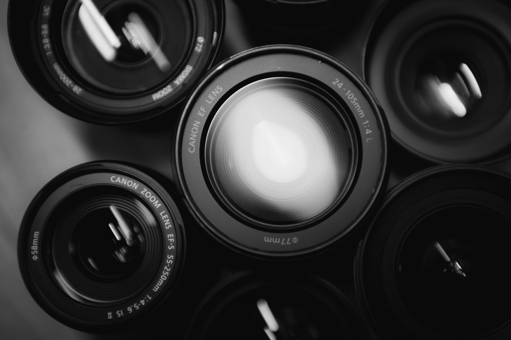

Descubre los trabajos que he podido realizar!
Fotografía - Edición de Video.
Dentro de este rubro he podido trabajar tanto como dentro del campo fotográfico como de la postproducción del mismo, poniendo a disposición los conocimientos adquiridos a lo largo de mi carrera universitaria como composición de encuadre, manejo tanto de luz artificial como luz natural, conocimiento de lentes objetivos, etc. Asimismo tengo buen manejo de programas Adobe como Photoshop, Lightroom, Illustrator, After Effects, Premiere.
Design
Poseo un buen manejo en programas de diseño en los cuales elaboré catálogos, etiquetas y también como mencione maquetado de páginas web entre otros.
Web Desing

He maquetado y diseñado páginas web con ayuda de lenguajes como HTML y CSS, también cuento por el momento con conocimiento intermedio en Javascript y Python, lenguajes en los que sigo en constante aprendizaje.